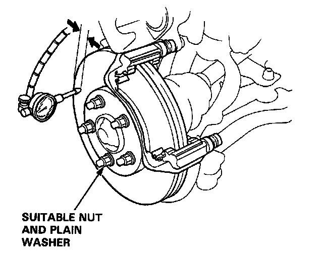

Disc Runout
Front Brake Disc Runout Inspection1. Support the front of the car on safety stands and remove the front wheels.
2. Remove the front brake pads. Service and Repair
3. Inspect the disc surface for grooves, cracks, and rust. Clean the disc thoroughly and remove all rust.

4. Use suitable nuts (12 x 1.5 mm) and plain washers to hold the disc securely against the hub. Torque nuts to 110 Nm (11 kg-m, 80 lb-ft). Mount a dial indicator as shown.
Brake Disc Runout:
Service Limit: 0.10 mm (0.004 in)
5. If the disc is beyond the service limit, refinish the disc with an on-car brake lathe. Be sure to install washers and nuts to hold disc securely to hub. Torque to 110 Nm (11 kg-m, 80 lb-ft). The Kwik Lathe produced by Kwik-Way Manufacturing Co. and the "Front Wheel Drive Disc Brake Lathe" offered by Snap-on Tools Co. are approved for this operation.
NOTE: A new disc should be refinished if its runout is greater than 0.10 mm (0.004 in).